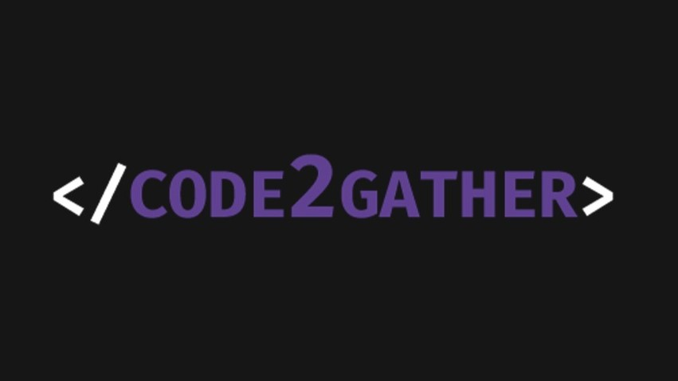

Eu sou uma profissional que gosta de desafios, resolver problemas e explorar novas ideias. Estou em busca de uma oportunidade como trainee ou júnior na área de desenvolvimento e programação.
Portanto, estou motivada para aperfeiçoar e expandir o meu conhecimento, colocar em prática minhas habilidades e utilizar meus conhecimentos adquiridos para contribuir com soluções no desenvolvimento de projetos.
Possuo as seguintes habilidades: organização, proatividade, adaptabilidade, praticidade, boa comunicação verbal e escrita além de ter grande facilidade para o trabalho em equipe.
| Projeto | Descrição | Experiência | Tecnologias Utilizadas |
|---|---|---|---|
|  Code2Gather |
Aplicação mobile onde mentores e aprendizes podem cadastrar seus perfis e temas de interesse. Por meio de um processo atrativo, o aplicativo realiza o match entre mentor, aprendiz e o tema desejado | Minha contribuição foi focada no desenvolvimento em Kotlin e na estruturação e gerenciamento do banco de dados | React Native, Kotlin, Node.js e MongoDB |
AjudaBrasil |
Aplicação web e mobile que visa criar um ambiente seguro para registrar e localizar pontos de doação, facilitando a identificação do local mais próximo para doar | Colaborei principalmente com a construção do front-end e na estruturação e organização do banco de dados | React, TypeScript, Node.js, React Native e SQLite |